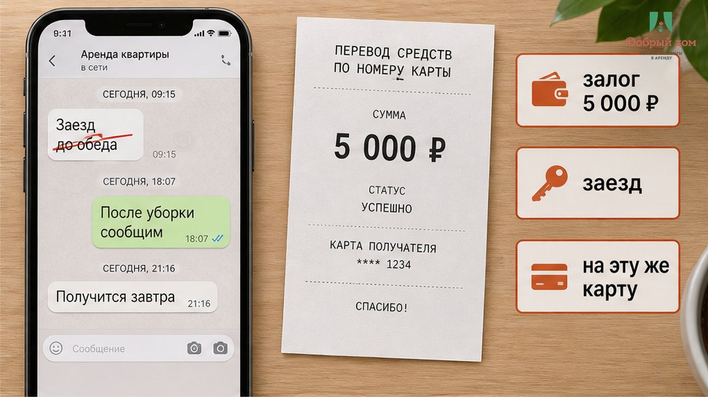
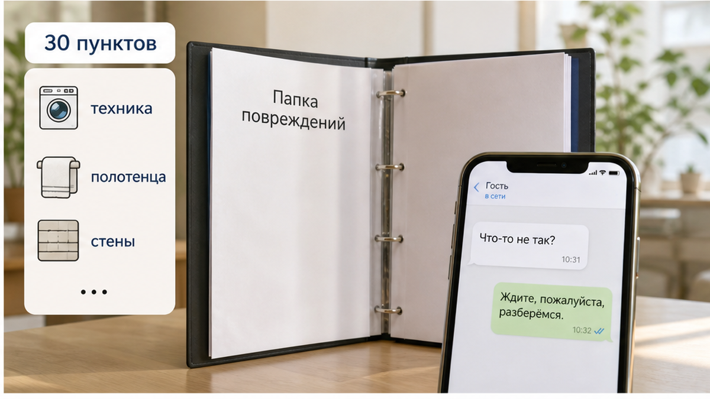
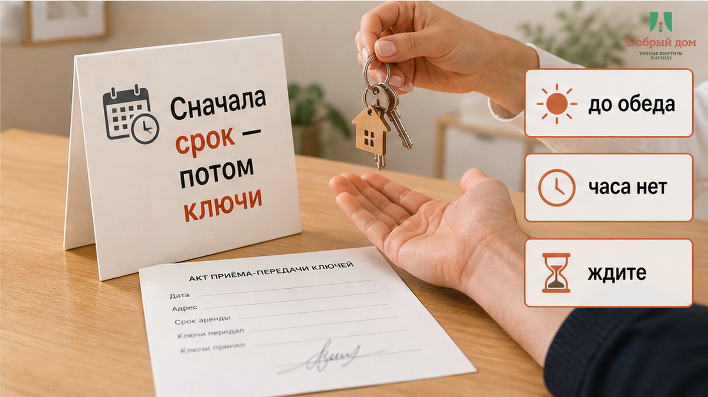
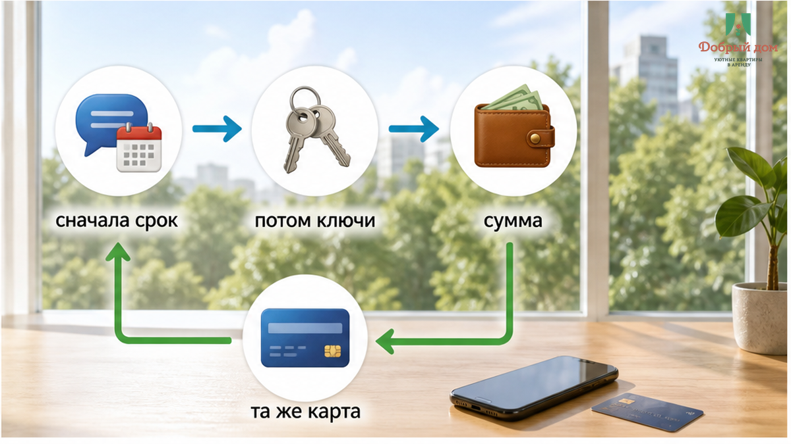

«Верну утром, до обеда, на эту же карту» — так было написано в чате. Залог 5 000 ₽ вы перевели ещё при заселении, ключи после выезда отдали, сумку поставили в багажник, и дальше у вас уже расписан день: дела, встреча, обратный билет. Телефон вибрирует. Вы открываете переписку — а там вместо обещанного «до обеда» появляется новое: «горничная ещё не была, вернём после уборки». Не через час. Не до определённого времени. Просто «после уборки».
Вот где обжигает. Не только в сумме 5 000 ₽, хотя это ваши деньги и совсем не мелочь. Обещание было конкретным, а условие стало размытым. Уборка может закончиться скоро, а может — к вечеру или завтра. Деньги ваши, а календарь уже будто бы чужой. И каждый следующий вопрос получает не срок, а новую просьбу подождать: «ждите», «ещё не проверили», «завтра после уборки».
Я хост посуточной в Тюмени. Это «Добрый дом». Мы общаемся с гостями в Telegram и MAX. Я рассказываю об этой ситуации не для того, чтобы кого-то пристыдить. Мне важно показать место, где вы ещё можете задать один правильный вопрос — до перевода денег и до получения ключей.

После выезда всё развивалось по одной схеме. Гость утром отдал ключи. Потом получил сообщение: «горничная ещё не была, вернём после уборки». К обеду срок не появился — только новое объяснение: «уборка не прошла, ждите». Вечером пришло ещё одно: «завтра, после следующей проверки».
Заметьте: здесь нет спора о повреждениях. Никто не показал царапину на столешнице, разбитую посуду или счёт за химчистку. Нет фото, акта и конкретной суммы удержания. Есть только первоначальная договорённость и её постепенная замена. Сначала было «до обеда», потом стало «после уборки», затем — «завтра». Каждый раз срок отодвигается на один шаг, когда гость о нём спрашивает.

Это не та история, где хозяин прямо говорит: «Залог не вернём из-за порчи». Там хотя бы есть предмет разговора: можно попросить фото до и после, уточнить сумму и причину. О такой ситуации я писал здесь: перевёл залог за посуточную, на выезде сказали «не вернём». В нашем случае спорить не с чем. «Ждите» нельзя проверить, а неопределённость выматывает сильнее прямого отказа.
У гостя остаются два варианта. Писать снова и снова, будто он просит чужие деньги, или махнуть рукой. День продолжается, нужно ехать дальше, а 5 000 ₽ остаются в переписке вместе с обещанием, которое уже никто не повторяет. Именно поэтому фраза без срока опаснее, чем кажется в момент бронирования.
Сама привязка возврата к уборке не делает хоста нечестным. После выезда квартиру нужно проверить. В «Добром доме» горничная проходит чек-лист из тридцати пунктов: смотрит технику, сантехнику, полотенца, посуду, пульты и состояние стен. Это не формальность. Следующий гость должен зайти в проверенную квартиру, а не в помещение, которое осмотрели на бегу.
Но чек-лист объясняет, почему возврат не происходит в ту же минуту. Он не отменяет срок, который вы назвали гостю. Это две разные вещи. Можно сказать: «Вернём после уборки, но не позднее определённого времени». Тогда у условия есть предел. Можно честно предупредить, что проверка займёт больше времени, и заранее назвать новое окно. А можно оставить гостя один на один с формулой «после уборки», в которой нет конца.
Разница между рабочей процедурой и красным флагом — именно в пределе. «После уборки в день выезда не позднее вечера» — понятная договорённость. «В течение дня» уже хочется уточнить, до какого момента заканчивается этот день. А «после уборки» без часа — это не срок, а разрешение ждать столько, сколько получится.
И ещё важная вещь: обещанный срок не появляется сам собой. Он берётся из договорённости. Если в чате написано «верну до обеда», это правило именно этой брони. Если ничего не написано, у гостя почти не остаётся опоры, кроме устного разговора. Поэтому дату и способ возврата лучше фиксировать до перевода, а не вспоминать о них уже у двери.
«После уборки» без часа — это нормально или красный флаг? Напишите, как вы это воспринимаете, в нашем Telegram или в MAX. Вопрос не теоретический: для одного гостя ожидание до вечера кажется обычным, для другого отсутствие конкретного часа уже означает, что договорённости нет.
Со стороны хоста решение простое: окно возврата нужно назвать до того, как гость получил ключи, и записать одной строкой. Не «до обеда» и не «после уборки», а, например: «Вернём до двух дня на ту же карту, с которой пришёл платёж». Важны не красивые слова, а понятная граница. Если срок нельзя назвать заранее, почему гость должен спокойно переводить залог?
Та же проверка помогает и с другими платежами. Сначала человек слышит одно условие, а после оплаты узнаёт другое: перевели 3 000 предоплатой, а к вечеру в чате тишина. Или выясняется, что «всё включено» было не совсем всем: хозяин сказал «всё включено», в такси доплатили 2 400. Иногда дополнительная сумма появляется уже у двери: оплатил за двоих, у двери попросили доплату за третьего. Везде одна проблема: деньги уходят раньше, чем условия становятся ясными.

Сначала срок. Потом ключи и деньги.

Залог без понятного времени возврата — это уже не спокойная гарантия, а деньги без даты возвращения. Пока ключи у вас, остаётся возможность уточнить условия и отказаться от брони, если ответ уклончивый. После выезда ключи уже переданы, а вместе с ними исчезает главный рычаг. Остаётся только строчка в чате. Пусть в ней будет время, сумма и способ перевода, а не одно бесконечное «после уборки».
Если уборка задержалась, это можно объяснить нормально. Я бы написал гостю, что не успеваю к обещанному сроку, назвал новый срок и причину. Один перенос с понятным объяснением — рабочая ситуация. Переносить срок каждый раз, когда человек напоминает о своих 5 000 ₽, — уже другая история. У неё один вердикт: так нельзя строить доверие.
Тридцать секунд в переписке до заселения могут сэкономить вам целый вечер напоминаний после выезда. В «Добром доме» мы называем окно возврата до выдачи ключей и фиксируем его текстом.
Забронировать квартиру можно через форму бронирования или сайт. Мы на связи в Telegram и MAX. Вопрос менеджеру — @Dobriy_dom_Tyumen. Позвонить: +7 (993) 574-83-22.